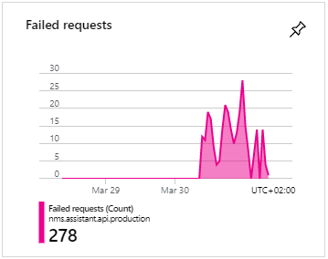

Recently I have been adding documentation to the Assistant for No Man's Sky API https://api.nmsassistant.com. While I was adding some 'useful' comments and explanations I was also tightening up it's security. I accidentally introduced a bug that broke the 'Likes' and 'Views' on the Guides in the Apps.
I have been hacking away at the Assistant for No Man's Sky tools in the evenings for 8 months at the time of writing this. Even though I have spent a lot of time refactoring and catching up on technical debt, some of the tools' code are a bit of a mess. One of the cleanest parts of the AssistantNMS tools is the API. However while adding features to the API I often neglect to put on the [Authorize] attribute on my Controllers and their methods. This attribute checks that a user is logged in by ensuring that the request has a JWT token being passed in the header, and that it is a valid token. As I was adding documentation to the API, I was making sure that all the Methods that needed Authentication had the [Authorize] attribute. When I can across the /guide/{guid} method, I slapped on the [Authorize] attribute and moved on, that action would cause the following spike in errors.

A little bit of background, I use Azure Application Insights to track issues on the API. Its easy to install and start tracking things. One thing that could be better is the Azure Portal 😅. But I would still recommend using Azure Application Insights, it's free and gives you stack traces from exceptions on Production 👍. You can even connect to and debug Production (I haven't done this yet, but it sounds awesome).
The /guide/{guid} method is responsible for returning the 'Likes' and 'Views' of a Guide for the specified guid. When I placed the [Authorize] attribute on the method, I was only allowing logged in users to view that data and all requests from the Apps are NOT logged in.
Luckily I like to check Azure App Insights quite regularly and was able to drill down into the errors to see that they were all coming from a specific method. I am also lucky that the API is easy to fix. I don't need to go through an App Store's approval process, I can simply click deploy from within Azure DevOps and a new version is copied over to the server in a few minutes.
On the App-side, users would simply not see the 'Likes' and 'Views' for the Guide they were looking at. I expect that very few users noticed the missing feature as no one reached out to point out the issue. The issue has now been resolved 😁.